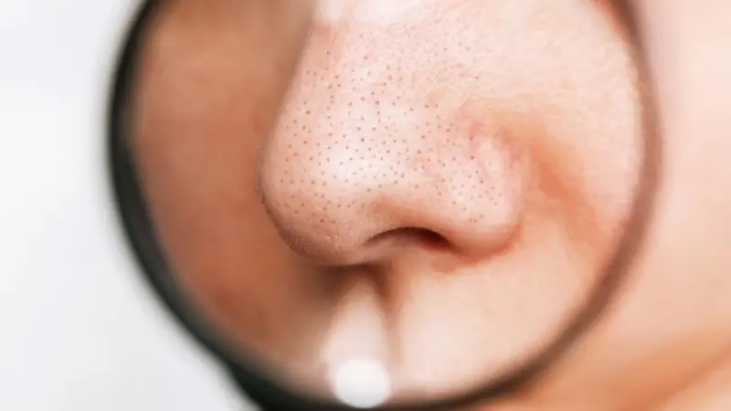
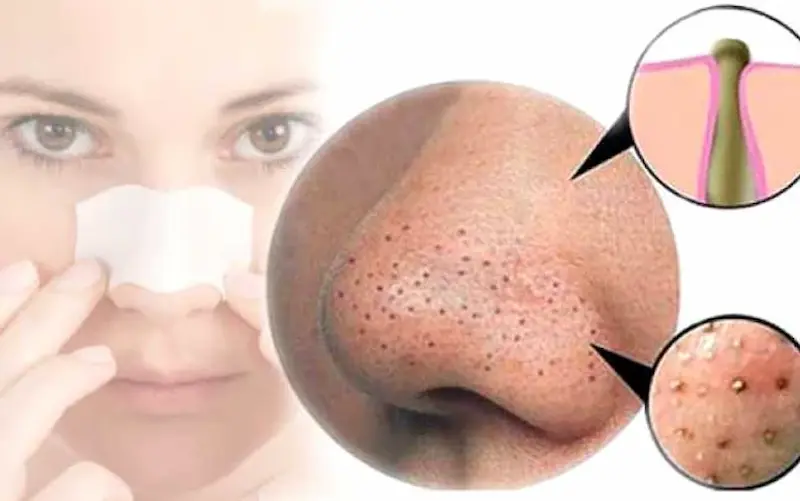
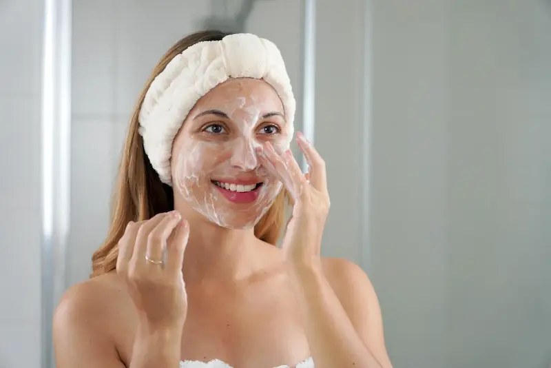
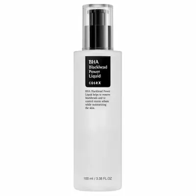
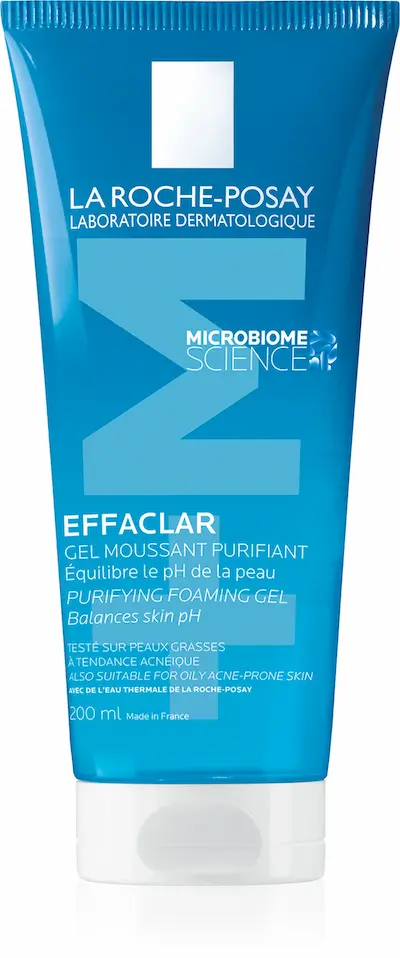

Глубокое очищение без повреждения защитного барьера — залог чистой кожи без черных точек.Что такое черные точки?
Черные точки, или открытые комедоны — это смесь избыточного кожного сала (себума) и ороговевших чешуек кожи, застрявших в порах. В отличие от закрытых комедонов (белых бугорков), они имеют выход на поверхность, где себум окисляется при контакте с воздухом, приобретая характерный темный цвет.
Важно понимать: черные точки — это не «грязь», которую можно просто смыть. В условиях климата Молдовы с пыльным летом и перепадами температур поры забиваются быстрее. Без правильной эксфолиации себум уплотняется, растягивая стенки пор и делая микрорельеф кожи рыхлым и неоднородным.
Причины появления и расширенные поры
Основной триггер — гиперкератоз (замедленное обновление клеток) в сочетании с повышенной активностью сальных желез. Портятся не только эстетика, но и эластичность кожи: если комедон находится в поре долго, она теряет способность сужаться обратно, превращаясь в стойкую «кратерную» пору.
Дополнительным фактором в Кишиневе часто выступает жесткая водопроводная вода. Она нарушает pH кожи, заставляя сальные железы работать в гиперрежиме для компенсации сухости. Результат — порочный круг: кожа обезвожена снаружи, но забита комедонами внутри. Правильный уход должен не «высушивать» черные точки, а растворять их содержимое.

Правила борьбы с черными точками
Компоненты, которые растворяют и очищают
| Ингредиент | Действие на поры |
|---|---|
| Салициловая кислота (BHA) | Единственный компонент, который проникает в поры и растворяет сальные пробки изнутри |
| Ниацинамид (Niacinamide) | Нормализует вязкость себума, предотвращая его окисление и потемнение в порах |
| Каолин и Иллит (Глины) | Абсорбируют излишки жира с поверхности, предотвращая образование новых комедонов |
| Ретиноиды (Retinol) | Ускоряют обновление клеток, не давая порам забиваться ороговевшими чешуйками |

Чего нельзя делать при черных точках?
Как сузить поры надолго?
Поры — это не двери, они не могут «закрыться» по щелчку. Однако их можно сделать менее заметными. Главное правило: чистая пора = узкая пора. Как только вы растворите плотную сальную пробку с помощью BHA-кислот, стенки поры естественным образом начнут сокращаться.
Для закрепления результата используйте средства, повышающие эластичность кожи (пептиды, ретинол). В сочетании с качественным увлажнением это создаст эффект «наполненности» кожи, при котором рельеф разглаживается, а поры становятся практически невидимыми.

Лучшее средства по уходу за кожей с черными точками


Ежедневный протокол: Утро vs Вечер
Чтобы поры оставались чистыми, а Т-зона не блестела уже к обеду, важно разделить уход на две фазы: защитную и терапевтическую.
| Время суток | Этап ухода | Зачем это нужно? |
|---|---|---|
| Утро | Мягкое умывание + Ниацинамид + SPF | Ниацинамид контролирует жирность днем, а SPF не дает себуму окисляться и темнеть под солнцем. |
| Вечер | Двойное очищение (Масло + Гель) | Гидрофильное масло растворяет сальные пробки и остатки SPF по принципу «жир растворяет жир». |
| Актив (2-3 раза в неделю) | BHA-тоник (Салициловая кислота) | Проникает глубоко в поры, «вычищая» из них плотные комедоны и сужая стенки. |
| SOS-уход | Маска из каолина (глины) | Используйте только на Т-зону после BHA-тоника для максимального эффекта детоксикации. |
Совет для жителей Молдовы: Летом, когда индекс ультрафиолета в Кишиневе зашкаливает, окисление себума происходит в разы быстрее. Если вы чувствуете, что поры «забиваются на глазах», добавьте в утренний уход антиоксидантный спрей или термальную воду, чтобы освежить pH кожи в течение дня.
Внешние факторы и уход в Молдове
Летом в Молдове пыль и высокая температура работают против вашей кожи: себум плавится и смешивается с городскими загрязнениями. Жесткая вода в Кишиневе и Бельцах дополнительно вымывает полезные липиды, провоцируя сальные железы на гипер-реакцию.
В таких условиях идеальным решением станет вечернее двухэтапное очищение: гидрофильный бальзам + мягкий гель. Это позволит эффективно растворять черные точки, не пересушивая кожу и защищая её от агрессивного воздействия окружающей среды.
Часто задаваемые вопросы о черных точках
Как долго нужно пользоваться BHA-кислотой, чтобы поры очистились?
Первые результаты в виде осветления пор заметны уже через 10–14 дней. Однако для глубокого очищения и визуального сужения стенок поры требуется цикл обновления кожи — около 28 дней регулярного использования.
Можно ли навсегда закрыть расширенные поры?
Нет, поры — это естественные каналы для выхода себума. Но их можно сделать практически невидимыми, поддерживая их чистоту и эластичность стенок с помощью ретинола и ниацинамида. В клиниках Кишинева для этого также используют процедуру HydraFacial.
Почему черные точки возвращаются сразу после чистки?
Это происходит из-за густого себума и гиперкератоза. В условиях пыльного лета в Молдове поры забиваются быстрее. Если не растворять пробки мягкими кислотами в домашнем уходе, сальная железа заполнит пустую пору за 2-3 дня.
Помогают ли глиняные маски от черных точек?
Да, каолин и иллит отлично абсорбируют жир с поверхности. Но для работы с глубокими комедонами глину лучше использовать после BHA-тоника: кислота разрыхляет пробку, а глина «вытягивает» её остатки на поверхность.